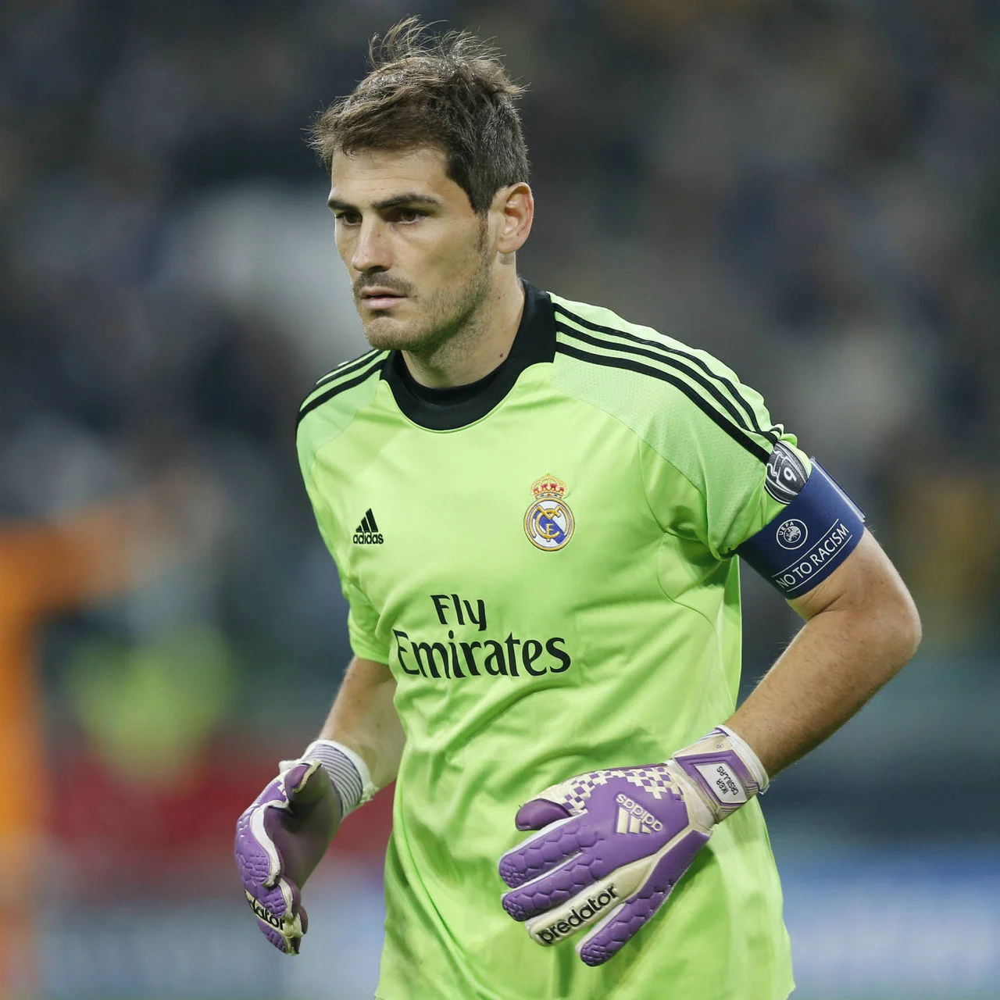
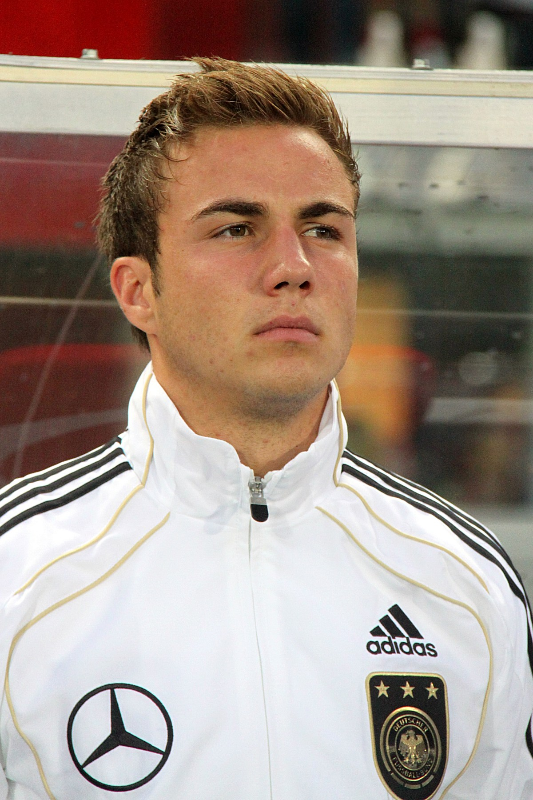

Mis dos jugadores preferidos de fútbol
En este mini bloc nombraré mis dos jugadores preferidos de fútbol que me han marcado en mi vida futbolistica.
Iker Casillas
Iker Casillas Fernández, nacido el 20 de mayo de 1981 en la ciudad de Móstoles ha sido una de mis mayores referencias en mi vida como futbolista.
Desde pequeño quise ser portero aunque al final me decante por jugar como defensa.
Una de las razones de mi admiración por el Real Madrid fue por Casillas.
Aqui muestro su palmarés como jugador.
- 3 Copas de Europa.
- 3 Mundial de Clubes.
- 5 Ligas.
- 2 Copas del Rey.
- 4 Supercopas de España.
- 1 Mundial con la selección española.
- 2 Eurocopas con la selección española.

Mario Götze
Mi 2 jugador preferido es Mario Götze, un jugador no muy conocido como el primero però que también me marcó en mi etapa como jugador.
Mario nació el 3 de junio de 1992 en la ciudad de Memmingem, Alemania .
Un dia me enamoré de su juego en un partido en el que jugaba en ese entonces en el club alemán Borussia Dortmund.
Desde ese dia he seguido su trayectoria futbolista hasta dia de hoy.
Su palmarés como futbolista es el siguiente:
- 5 ligas alemanas.
- 1 champions League.
- 1 Mundial con la selección alemana.
- 2 Supercopas alemanas.
- 3 copas alemanas.
